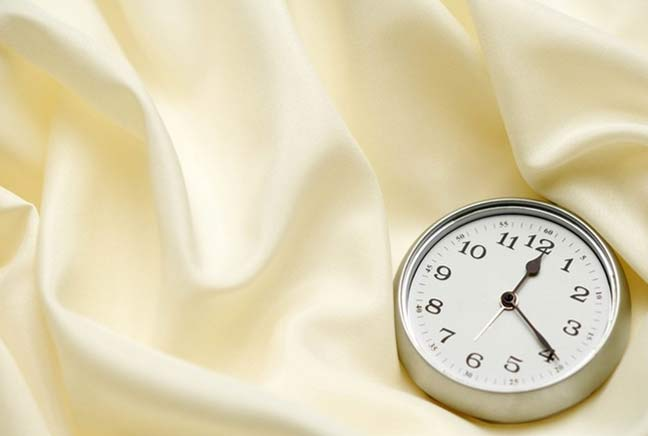

除了用好玫琳凯防晒产品外，也有一些防晒小贴士要告诉你哦：

吃这些可以帮助你防晒：高维C含量的猕猴桃、草莓或是柑橘类，大豆制品、坚果、绿茶可以充分抗氧化。特别推荐番茄哦。番茄富含抗氧化剂番茄红素，每天摄入16毫克番茄红素可将晒伤的危险系数下降40%，其中β胡萝卜素同样能有效阻挡紫外线。
防晒工具要常备哦。除了防晒霜，一顶遮阳帽也是外出的必备品，能减少30%紫外线伤害。长袖薄开衫、太阳眼镜也是推荐的心水防晒小物件。
在出门前30分钟就应该将防晒产品均匀地涂抹在身体暴露于阳光的部位上。由于防晒中的有效成分必须渗透至角质表层后，才能发挥长时间的保护效果，出门前才涂防晒产品，没有完全起到防晒效果。
再优秀的防晒产品往往只能维持3、4个小时。况且由于汗水的稀释等原因，其防晒效果会渐渐减弱。正确做法：涂抹了防晒产品3、4个小时后，就应该洗掉并重新涂抹，以确保防晒效果的延续。

下水后要尽快擦干身上的水分，再补涂防晒霜。因为体表水分会吸收紫外线，令肌肤更易晒黑。
涂抹防晒霜时，记得最后在鼻尖、颧骨处加多一层哦，这可是脸部最接近阳光的部位呢。
在夏季可将晒后修护露常备一瓶在家里冰箱，冰过后使用效果更舒适更有效。而在生活细节上也要注意，此时预防发炎和进一步刺激带来的敏感也很重要，尽量避免用粗糙的织物擦脸，减少手对皮肤的不必要触碰，适当使用舒缓植物配方的保养品比如玫琳凯晒后修护露能降低皮肤泛红的几率。